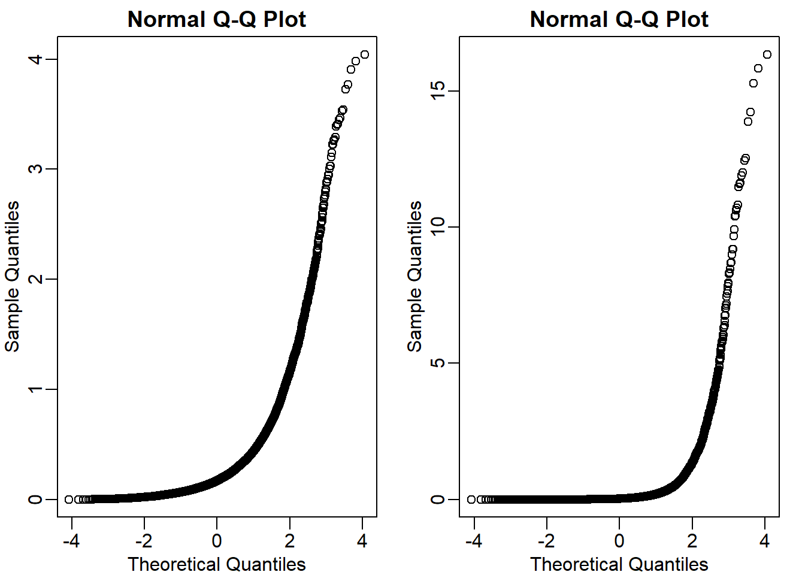

Chapter 9 Basic Machine Learning
Note: I have rephrased some parts of the questions for clarity. These changes are bolded. Due to the random numbers, the exact values of the answers, despite the same seeds, might differ. So please be mindful of that.
First, upload necessary package(s).
library(dplyr) # uplaods the function filter() and %>%
library(rafalib) # important for plotting with base R
library(genefilter) # rowttests
#library(devtools) # allows download from github
library(GSE5859Subset) # subset of gene expression data
library(tissuesGeneExpression)
data(tissuesGeneExpression)
library(RColorBrewer)## Warning: package 'RColorBrewer' was built under R version 3.5.2## Warning: package 'caret' was built under R version 3.5.3##
## Attaching package: 'caret'## The following object is masked from 'package:survival':
##
## cluster##
## Attaching package: 'gplots'## The following object is masked from 'package:stats':
##
## lowess## Warning: package 'matrixStats' was built under R version 3.5.3##
## Attaching package: 'matrixStats'## The following objects are masked from 'package:Biobase':
##
## anyMissing, rowMedians## The following objects are masked from 'package:genefilter':
##
## rowSds, rowVars## The following object is masked from 'package:dplyr':
##
## count9.2 Exercises
Question 1
Create a random matrix with no correlation in the following way:
Run hierarchical clustering on this data with the hclust function with default parameters to cluster the columns. Create a dendrogram. In the dendrogram, which pairs of samples are the furthest away from each other?

The answer is B: 19 and 14. The answer might be different due to the random numbers.
Question 2
Set the seed at 1, set.seed(1) and replicate the creation of this matrix 100 times:
then perform hierarchical clustering as in the solution to Question 1, and find the number of clusters if you use cuttree at height 143. This number is a random variable. Based on the Monte Carlo simulation, what is the standard error of this random variable?
set.seed(1)
res_list <- replicate(100, {
m = 10000
n = 24
x = matrix(rnorm(m*n),m,n)
d <- dist(t(x))
hc <- hclust(d)
hclusters <- cutree(hc, h=143)
num_clus <- length(unique(hclusters))
return(num_clus)
})
popsd(res_list)## [1] 0.8986657Question 3
Run kmeans with 4 centers for the blood RNA data:
Set the seed to 10, set.seed(10) right before running kmeans with 5 centers. Explore the relationship of clusters and information in sampleInfo. Which of the following best describes what you find?
## GSM136508.CEL.gz GSM136530.CEL.gz GSM136517.CEL.gz
## 2 1 1
## GSM136576.CEL.gz GSM136566.CEL.gz GSM136574.CEL.gz
## 5 3 5
## GSM136575.CEL.gz GSM136569.CEL.gz GSM136568.CEL.gz
## 5 4 5
## GSM136559.CEL.gz GSM136565.CEL.gz GSM136573.CEL.gz
## 3 3 4
## GSM136523.CEL.gz GSM136509.CEL.gz GSM136727.CEL.gz
## 1 2 2
## GSM136510.CEL.gz GSM136515.CEL.gz GSM136522.CEL.gz
## 2 2 1
## GSM136507.CEL.gz GSM136524.CEL.gz GSM136514.CEL.gz
## 2 1 1
## GSM136563.CEL.gz GSM136564.CEL.gz GSM136572.CEL.gz
## 3 3 4## cluster
## true 1 2 3 4 5
## 0 4 5 2 1 0
## 1 2 1 3 2 4## cluster
## true 1 2 3 4 5
## 2005-06-10 0 1 0 0 0
## 2005-06-23 1 5 0 0 0
## 2005-06-27 5 0 0 0 0
## 2005-10-07 0 0 5 3 2
## 2005-10-28 0 0 0 0 2The answer is C: Date is driving the clusters.
Question 4
Load the data:
Pick the 25 genes with the highest across sample variance. This function might help:
Use heatmap.2 to make a heatmap showing the sampleInfo$group with color, the date as labels, the rows labelled with chromosome, and scaling the rows. What do we learn from this heatmap?
hmcol <- colorRampPalette(brewer.pal(9, "GnBu"))(100)
month = format( sampleInfo$date, "%m")
rv <- rowVars(geneExpression)
idx <- order(-rv)[1:25]
cols <- palette(brewer.pal(8, "Dark2"))[as.fumeric(as.character(sampleInfo$group))]
heatmap.2(geneExpression[idx,],
trace = 'none', labRow = geneAnnotation[idx,]$CHR,
col = hmcol, labCol = month,
ColSideColors = cols)
The correct answer is C: A group of chrY genes are higher in group 0 and appear to drive the clustering. Within those clusters there appears to be clustering by month.
Question 5
Create a large dataset of random data that is completely independent of sampleInfo$group like this:
set.seed(17)
m = nrow(geneExpression)
n = ncol(geneExpression)
x = matrix(rnorm(m*n),m,n)
g = factor(sampleInfo$g)Create two heatmaps with these data. Show the group g either with labels or colors. First, take the 50 genes with smallest p-values obtained with rowttests. Then, take the 50 genes with largest standard deviations. Which of the following statements is true?
# p-value
pvals <- rowttests(x, g)$p.value
idx <- order(pvals)[1:50]
cols <- palette(brewer.pal(8, "Dark2"))[as.fumeric(as.character(sampleInfo$g))]
heatmap.2(x[idx,],
trace = 'none', labRow = geneAnnotation[idx,]$CHR,
col = hmcol, labCol = month,
ColSideColors = cols)# std dev
sds <- genefilter::rowSds(x,g)
idx <- order(-sds)[1:50]
cols <- palette(brewer.pal(8, "Dark2"))[as.fumeric(as.character(sampleInfo$g))]
heatmap.2(x[idx,],
trace = 'none', labRow = geneAnnotation[idx,]$CHR,
col = hmcol, labCol = month,
ColSideColors = cols)The answer is A: There is no relationship between g and x, but with 8,793 tests some will appear significant by chance. Selecting genes with the t-test gives us a deceiving result.
Recall that we have already selected smallest p-values from a dataset in which the null hypothesis is true. Therefore, we can see clusters that indicate that there is a significant difference between sample groups. However, this significance is not real because we know that the null hypothesis is true.
9.4 Exercises
Question 1
Generate some random data to imitate heights for men (0) and women (1):
n = 10000
set.seed(1)
men = rnorm(n,176,7) #height in centimeters
women = rnorm(n,162,7) #height in centimeters
y = c(rep(0,n),rep(1,n))
x = round(c(men,women))
##mix it up
ind = sample(seq(along=y))
y = y[ind]
x = x[ind]Using the data generated above, what is the \(E(Y|X=176)\) (proportion of females)?
## [1] 0.1049475Question 2
Now make a plot of \(E(Y|X=x)\) for x=seq(160,178) using the data generated in Question 1.
If you are predicting female or male based on height and want your probability of success to be larger than 0.5, what is the largest height where you predict female?

x_list <- seq(160,178)
res <- vector('double', length(x_list))
for (i in seq_along(x_list)) {
res[[i]] <- mean(y[x==x_list[[i]]])
}
ind <- max(which(res > 0.5))
x_list[ind] # answer## [1] 168## [1] 0.57871729.8 Exercises
Question 1
Generate the following data:
n = 10000
set.seed(1)
men = rnorm(n,176,7) #height in centimeters
women = rnorm(n,162,7) #height in centimeters
y = c(rep(0,n),rep(1,n))
x = round(c(men,women))
##mix it up
ind = sample(seq(along=y))
y = y[ind]
x = x[ind]Set the seed at 5, set.seed(5) and take a random sample of 250 from:
Use loess to estimate \(f(x) = E(Y|X=x)\) using the default parameters. What is the predicted \(f(168)\)?
fit <- loess(Y~X)
newx <- seq(min(X),max(X),len=45)
hat <- predict(fit, newdata=data.frame(X=newx))
mypar()
plot(X,Y)
names(hat) <- round(newx,1)
lines(newx,hat)
## 168
## 0.5480233Question 2
The loess estimate above is a random variable. We can compute standard errors for it. Here we use Monte Carlo to demonstrate that it is a random variable. Use Monte Carlo simulation to estimate the standard error of your estimate of \(f(168)\).
Set the seed to 5, set.seed(5) and perform 10,000 simulations and report the SE of the loess based estimate.
set.seed(5)
B <- 10000
N <- 250
newx <- seq(min(X),max(X),len=45)
res <- replicate(B, {
ind = sample(length(y),N)
Y = y[ind]
X = x[ind]
fit <- loess(Y~X)
hat <- predict(fit, newdata=data.frame(X=newx))
names(hat) <- round(newx,1)
return(hat['168'])
})
names(res) <- NULL
popsd(res)## [1] 0.056181959.11 Exercises
Load the following dataset:
And define the outcome and predictors. To make the problem more dificult, we will only consider autosomal genes:
y = factor(sampleInfo$group)
X = t(geneExpression)
out = which(geneAnnotation$CHR%in%c("chrX","chrY"))
X = X[,-out]Question 1
Use the createFold function in the caret package, set the seed to 1 set.seed(1) and create 10 folds of y. What are the 2nd entry in the fold 3?
## [1] 15Question 2
We are going to use kNN. We are going to consider a smaller set of predictors by using filtering gene using t-tests. Specifically, we will perform a t-test and select the \(m\) genes with the smallest p-values.
Let m = 8 and k = 5 and train kNN by leaving out the second fold idx[[2]]. How many mistakes do we make on the test set? Remember it is indispensable that you perform
the t-test on the training data. Use all 10 folds, keep k = 5. Hint: be careful about indexing.
m <- 8 # number of genes
pvals <- rowttests(t(X[-idx[[2]],]),y[-idx[[2]]])$p.value
ind <- order(pvals)[1:m]
pred <- knn(train = X[-idx[[2]],ind],
test = X[idx[[2]],ind],
cl = y[-idx[[2]]], k = 5)
sum(pred != y[idx[[2]]])## [1] 1When performing rowttests it is important to exclude test data. Indexing becomes quite tricky because you need to separate training and test data.
Question 3
Now run through all 5 folds. What is our error rate (total number of errors / total predictions)?
n_fold <- length(idx)
res <- vector('double', n_fold)
m <- 8
for (i in seq(n_fold)) {
pvals <- rowttests(t(X[-idx[[i]],]),y[-idx[[i]]])$p.value
ind <- order(pvals)[1:m]
pred <- knn(train = X[-idx[[i]],ind],
test = X[idx[[i]],ind],
cl = y[-idx[[i]]], k = 5)
res[[i]] <- sum(pred != y[idx[[i]]])
}
sum(res)/length(y)## [1] 0.375Question 4
Now we are going to select the best values of k and m. Use the expand.grid function to try out the following values:
Now use apply or a for-loop to obtain error rates for each of these pairs of parameters. Which pair of parameters minimizes the error rate? Like previously, use the same p-values that you selected from the training data alone, and loop over 10 folds.
ms = 2^c(1:11)
ks = seq(1,9,2)
params = expand.grid(k=ks, m=ms)
n_fold <- length(idx)
error_rate_avg = vector('double',nrow(params))
for (j in seq(nrow(params))) {
for (i in seq(n_fold)) {
pvals <- rowttests(t(X[-idx[[i]],]),y[-idx[[i]]])$p.value
ind <- order(pvals)[1:params[j,][[2]]]
pred <- knn(train = X[-idx[[i]],ind],
test = X[idx[[i]],ind],
cl = y[-idx[[i]]], k = params[j,][[1]])
res[[i]] <- sum(pred != y[idx[[i]]])
}
error_rate_avg[[j]] <- sum(res)/length(y)
}
ind <- which(error_rate_avg == min(error_rate_avg))
params[ind,] # answer## k m
## 47 3 1024## [1] 0.2083333Question 5
Repeat Question 4, but now perform the t-test filtering before the cross validation. Note how this biases the entire result and gives us much lower estimated error rates. What is the minimum error rate?
ms = 2^c(1:11)
ks = seq(1,9,2)
params = expand.grid(k=ks, m=ms)
n_fold <- length(idx)
error_rate_avg = vector('double',nrow(params))
for (j in seq(nrow(params))) {
for (i in seq(n_fold)) {
pvals <- rowttests(t(X),y)$p.value
ind <- order(pvals)[1:params[j,][[2]]]
pred <- knn(train = X[-idx[[i]],ind],
test = X[idx[[i]],ind],
cl = y[-idx[[i]]], k = params[j,][[1]])
res[[i]] <- sum(pred != y[idx[[i]]])
}
error_rate_avg[[j]] <- sum(res)/length(y)
}
min(error_rate_avg) # minimum error rate## [1] 0.08333333## [1] 0.1833333The error rate is much lower than the one in Question 4 because we did not filter out p values from the test data in this case. This is not a correct practice. The practice shown in Question 4 is correct.
Question 6
Repeat Question 3, but now, instead of sampleInfo$group, use
What is the minimum error rate now?
ms = 2^c(1:11)
ks = seq(1,9,2)
params = expand.grid(k=ks, m=ms)
n_fold <- length(idx)
error_rate_avg = vector('double',nrow(params))
for (j in seq(nrow(params))) {
for (i in seq(n_fold)) {
pvals <- rowttests(t(X[-idx[[i]],]),y[-idx[[i]]])$p.value
ind <- order(pvals)[1:params[j,][[2]]]
pred <- knn(train = X[-idx[[i]],ind],
test = X[idx[[i]],ind],
cl = y[-idx[[i]]], k = params[j,][[1]])
res[[i]] <- sum(pred != y[idx[[i]]])
}
error_rate_avg[[j]] <- sum(res)/length(y)
}
min(error_rate_avg) # minimum error rate## [1] 0## [1] 0.06060606